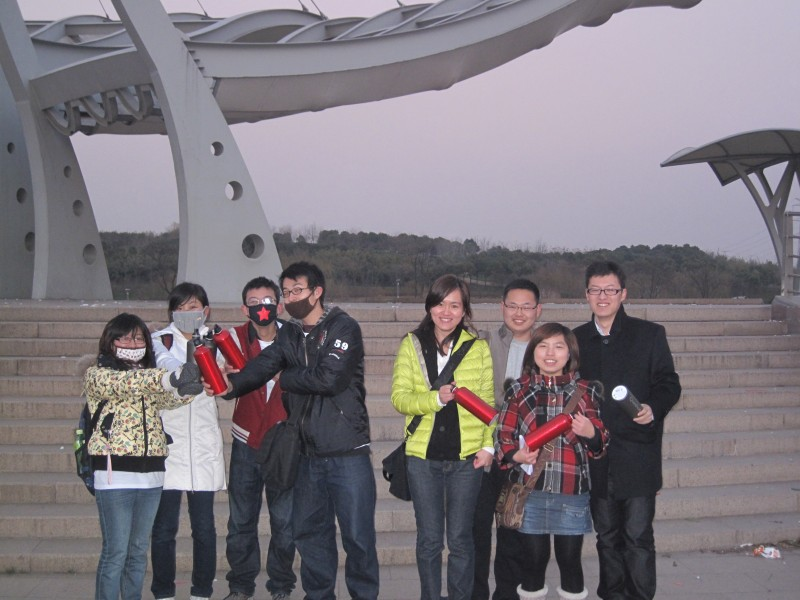

发信人: xumengchao (枫), 信区: outdoor
标 题: 【总结】城市定向的那些事
发信站: 饮水思源 (2011年01月03日00:03:12 星期一)
十二月的上海，在下完一场大雪后，迎来了清澈湛蓝的天空。交大野外生存协会“迪
卡侬”杯城市定向大赛如期举行。今天阳光明媚，虽刮着风，却不能吹走队员们的兴奋的
心情。
12月26号，周末，圣诞后一天，城市定向大赛的圆满举办为这个多重身份的日子又增
加了难忘的记忆。
在起点穿上参赛T恤的选手们合影留念后迅速出发。我们试图捕捉每一个瞬间……
悠闲二人组。。
screen.width - 200){this.width = screen.width - 200}">
其实，我可以更快的！

我的队友哪去了？
screen.width - 200){this.width = screen.width - 200}">
原来在这里！
screen.width - 200){this.width = screen.width - 200}">
巡点的工作人员，怎么看都有点像黑帮~~

在起点等待的工作人员
screen.width - 200){this.width = screen.width - 200}">
十字路口，该去哪呢？
screen.width - 200){this.width = screen.width - 200}">
Oh！！忘带地图了！贪玩的工作人员
screen.width - 200){this.width = screen.width - 200}">
蹲点饿了~~偷吃中~~
screen.width - 200){this.width = screen.width - 200}">
奔跑！！！
screen.width - 200){this.width = screen.width - 200}">
终于找到了。。做什么游戏呢？

整个小丸子一起吃？为了成绩，也就不烫了~~
screen.width - 200){this.width = screen.width - 200}">
情癫大圣~~
screen.width - 200){this.width = screen.width - 200}">
yes！we can！！！
screen.width - 200){this.width = screen.width - 200}">
终于到终点了~~不管成绩如何，先合个影吧~~
screen.width - 200){this.width = screen.width - 200}">
笑什么呢~~
screen.width - 200){this.width = screen.width - 200}">
等待成绩中
screen.width - 200){this.width = screen.width - 200}">
三等奖获得者
screen.width - 200){this.width = screen.width - 200}">
二等奖获得者
 screen.width - 200){this.width = screen.width - 200}">
一等奖获得者，不对~~怎么这么眼熟，原来获得一等奖的参赛队员没有跑够，又在体育公
园里继续了~~果然是一等奖啊~~所以只好由工作人员带领了~~
screen.width - 200){this.width = screen.width - 200}">
声明：奖品不是棒棒糖，是迪卡侬背包
screen.width - 200){this.width = screen.width - 200}">
再来一张正式的
screen.width - 200){this.width = screen.width - 200}">
记住我们的队伍，20队。。
screen.width - 200){this.width = screen.width - 200}">
完美四人组~~
screen.width - 200){this.width = screen.width - 200}">
结束。。
screen.width - 200){this.width = screen.width - 200}">
相信除了照片记录的难忘瞬间，还有更多更加美好快乐的场景，大家赶快出来分享吧！
最后，祝贺获奖的同学，同时感谢所有参赛选手的热情参与！
感谢迪卡侬体育用品超市的大力赞助与支持！
特别感谢所有在定向过程中默默付出的工作人员们，为大家创造了一次探索这个城市的元
素与内涵的机会！有被我骚扰过无数遍，改过N次海报、T恤logo、袖标Logo、贴纸logo等
等的朱天行 和王蕴智。有踩点小组的周致民、梁凯、陈迪、王蕴智、许毓君、骆英豪、蔡
文迪，还有被我早晨一个电话从睡梦中吵醒临时踩点的徐志诚和冯晓远。发传单的周致民
等好多同学，贴海报的陈迪。。你们真是太给力了。。结果报名火爆，提前三天就名额满
了（当然，这也是我们的估计失误），对那些后来报名不能够参加比赛的同学说声抱歉，
我们还会举办更多更精彩的活动，期待你们的参与。设计路线的冯晓远和蔡文迪，通过一
遍又一遍的否定，改动，再否定，再改动，终于完成了比较公平的五条路线。。这个比做
数学题还痛苦吧~~辛苦你们了~试跑的冯晓远、陈迪和蔡文迪以及你们的同学们（ps：貌似
有一位是zys，我的直系学弟。。哈哈）。。还有被各种邮件，询问详情的短信、电话困扰
一个星期的骆英豪，真是辛苦了~~最后飞信通知队员的蔡文迪，还要一个一个电话通知用
联通的队员，相信你明白了世界上最遥远的距离是什么了吧，辛苦了。。制定比赛规则的
徐志成，设计前期路线的骆英豪，在准备会上引起阵阵笑声的注意事项宣读人陈迪。。当
然还要感谢比赛当天蹲点的同学，以及各位在起点帮忙的rry，gxy，lyx，jyq，cpf。。在
背后提供支持的会长，部长们和老人们。。感谢大家一个月来的努力和付出，谢谢大家~~
用cd的打油诗结尾吧：
让我们走出寝室
褪去一身的忧烦
追逐满地的阳光
搜索遗落的快乐----
行走，奔跑，寻觅，我们在脚步汗水中，了解我们生活的城市~~
雕塑，小吃，高楼，我们在大街小巷中，感受都市的生活气息~~
--
※ 来源:·饮水思源 bbs.sjtu.edu.cn·[FROM: 59.78.28.147]
|